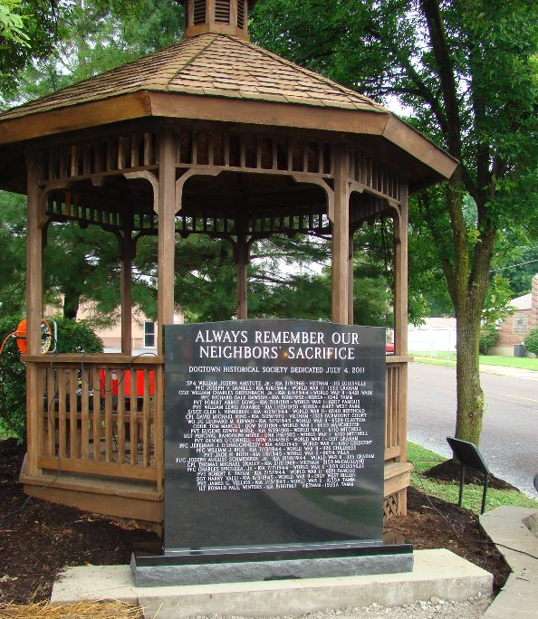

DOGTOWNERS WHO SERVED IN U.S. WARS
Dogtown Service People known to have served in World War I
Dogtown Service People known to have served in World War II
Dogtown Service People known to have served in Korea
Dogtown Service People known to have served in Vietnam
War Memorial in St. James Church
War II Newspaper stories relating to Dogtown soldiers
Dogtown -- The first block to subscribe 100% to war bonds -- 6900 Berthold
THE DOGTOWN NEWS
-- 6 editions published.
The Dogtown News, issue No 1. March 1945
The Dogtown News, issue No 2. April 1945
The Dogtown News, issue No 3. May 1945
The Dogtown News, issue No 4. August 1945
The Dogtown News, issue No 5. November 1945
The Dogtown News, issue No 6. December 1945
War II V-Letter from December 1944
HOME
DOGTOWN
Bibliography
Oral history
Recorded history
Photos
YOUR page
External links
Walking Tour
Bob Corbett
corbetre@webster.edu